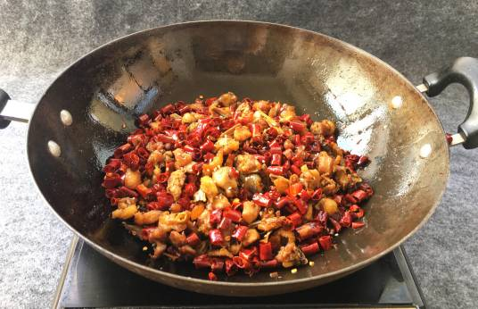

辣子鸡丁
辣子鸡丁，特色传统菜肴，属川菜系， 一道家常菜，较辣，是重庆一道著名的江湖风味菜，起源于歌乐山。干辣椒不是主料胜似主料，充分体现了江湖厨师“下手重”的特点。成菜色泽棕红油亮，质地酥软，麻辣味浓。咸鲜醇香，略带回甜，是一款食者啖之难忘的美味佳肴。
营养价值
鸡肉蛋白质的含量比例较高，种类多，而且消化率高，很容易被人体吸收利用，有增强体力、强壮身体的作用。鸡肉含有对人体生长发育有重要作用的磷脂类，是中国人膳食结构中脂肪和磷脂的重要来源之一。鸡肉对营养不良、畏寒怕冷、乏力疲劳、月经不调、贫血、虚弱等有很好的食疗作用。祖国医学认为，鸡肉有温中益气、补虚填精、健脾胃、活血脉、强筋骨的功效。
鸡蛋中含有丰富的DHA和卵磷脂等，对神经系统和身体发育有很大的作用，能健脑益智，避免老年人智力衰退，并可改善各个年龄组的记忆力。营养学家选用鸡蛋来防治动脉粥样硬化，获得了意料之外的惊人效果。鸡蛋中含有较多的维生素B2，它可以分解和氧化人体内的致癌物质，鸡蛋中的微量元素也都具有防癌的作用。鸡蛋蛋白质对肝脏组织损伤有修复作用，蛋黄中的卵磷脂可促进肝细胞的再生。鸡蛋含有人体需要的几乎所有的营养物质，故被人们称作“理想的营养库”，营养学家称之为“完全蛋白质模式”。不少长寿老人的延年益寿经验之一就是每天必食一个鸡蛋。
荸荠中含的磷是根茎类蔬菜中最高的，能促进人体生长发育和维持生理功能的需要，对牙齿骨骼的发育有很大好处，同时可促进体内的糖、脂肪、蛋白质三大物质的代谢，调节酸碱平衡。因此荸荠适于儿童食用。英国在对荸荠的研究中发现了一种“荸荠英”，这种物质对金黄色葡萄球菌、大肠杆菌、产气杆菌及绿脓杆菌均有一定的抑制作用，对降低血压也有一定效果。这种物质还对癌肿有防治作用。荸荠是寒性食物，有清热泻火的良好功效。既可清热生津，又可补充营养，最宜用于发烧病人。它还具有凉血解毒，利尿通便，化湿祛痰，消食除胀等功效。
鸡蛋清：鸡蛋清富含蛋白质和人体必需的8种氨基酸和少量醋酸，可以增强皮肤的润滑作用，保护皮肤的微酸性，以防细菌感染；此外，鸡蛋清还具有清热解毒作用；中医还认为，鸡蛋清性微寒而气清，能易经补气，润肺利咽，清热解毒，有助于延缓衰老。
红辣椒：辣椒是老百姓餐桌上最常见的一种原料，其营养丰富，口味独特，就餐时能增加饭量，多食可增强体力，改善怕冷、冻伤、血管性头痛等症状。同时辣椒中含有一种物殊物质，能加速新陈代谢，促进荷尔蒙分泌，保健皮肤。富含的维生素C，可以控制心脏病及冠状动脉硬化，降低胆固醇。含有较多抗氧化物质，可预防癌症及其他慢性疾病。可以使呼吸道畅通，用以治疗咳嗽、感冒。辣椒还能杀抑胃腹内的寄生虫。
花生仁：花生仁含有丰富的蛋白质、不饱和脂肪酸、维生素E、钙、镁、锌等营养元素，有增强记忆力、抗老化、止血、预防心脑血管疾病、减少肠癌发生的作用；但其经过油炸后，性质热燥，不宜多食。
风味特点
辣子鸡丁微甜，味鲜香，为四川传统菜之一。香辣可口，营养丰富，制作简单。它是用鸡脯肉加辣椒炒制而成。其中使用的泡红辣椒是四川特产，为川菜的特有的调味料。